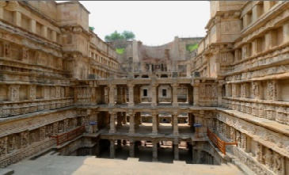
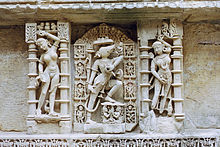

Your Tour Guide
Raani Ki Vaav
 During the period of the Solanki dynasty, the stepwell called the Rani ki vav, or Ran-ki vav (Queen's step well) was constructed. It is a richly-sculptured monument, built by Udaymati in memory of her husband, Bhimdev I (1022-1063).
 It was probably completed by Udayamati and Karandev I after his death. A reference to Udaymati building the monument is in the 'Prabandha Chintamani' composed by Merutunga Suri in 1304 AD..
It was probably completed by Udayamati and Karandev I after his death. A reference to Udaymati building the monument is in the 'Prabandha Chintamani' composed by Merutunga Suri in 1304 AD..
It was one of the largest and the most sumptuous structures of its type. It became silted up and much of it is not visible now, except for some rows of sculptured panels in the circular part of the well. Among its ruins one pillar still stands which is the proof not only of the elegance of its design, but also excellent example of this period. A part only of the west well is extant from which it appears that the wall had been built of brick and faced with stone. From this wall project vertical bracket in pairs, this supported the different galleries of the well shaft proper. This bracketing is arranged in tiers and is richly carved.
There is also a small Gate below the last step of the step well which has a 30 kilometre tunnel built (Now it has been blocked by stones and mud) which leads to the town of Sidhpur near Patan. It was used as an escape gateway for king who built the step well in the times of defeat.
 Most of the sculpture is in devotion to Vishnu, in the forms of his Avatars (Krishna, Rama and others), representing their return to the world.
Around 50–60 years back there used to be ayurvedic plants around this areas which causes the water accumulated in Rani ni vav helpful for viral disease, fever.